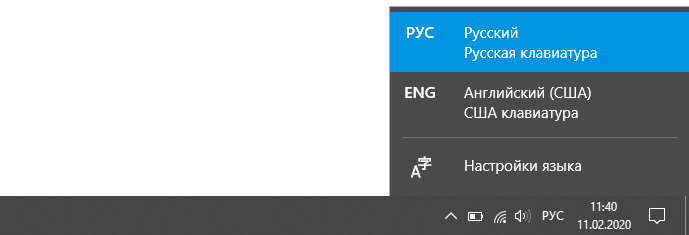

Клавиши клавиатуры
В этом уроке я расскажу про клавиши клавиатуры стационарного компьютера и ноутбука. Мы разберемся со значением кнопок, рассмотрим популярные сочетания клавиш.
Назначение кнопок клавиатуры
Несмотря на то, что клавиатуры бывают разного вида и устройства, основные клавиши одни и те же на всех моделях.
Вот фото обычной клавиатуры компьютера:
Буквы. Самая важная часть - те клавиши, которыми печатают текст.
Как правило, на каждой нанесены две буквы – одна иностранная, другая русская. Чтобы напечатать букву на нужном языке, выберите его на панели задач в правом нижнем углу экрана.
Еще язык можно изменить через сочетание клавиш Shift и Alt. Для этого сначала нажмите клавишу Shift и, не отпуская ее, Alt. Иногда настроено другое сочетание: Shift и Ctrl.
Для печати большой буквы нужно удерживать Shift и вместе с ней нажать на букву.
Для печати точки при русском алфавите нажмите последнюю клавишу в нижнем буквенном ряду (справа).

Для печати запятой нажмите на эту же кнопку, но удерживая Shift.
А когда выбран английский алфавит, для печати точки нужно нажать на клавишу, которая находится перед русской точкой. На ней обычно написана буква Ю. А запятая при английском алфавите находится там, где русская Б - перед английской точкой.

Цифры и знаки. Прямо над буквами находится ряд кнопок с цифрами и знаками (! « » № ; % : ? * и т.д.).
Если нажать на одну из них, напечатается нарисованная цифра. А вот чтобы печатался знак, нужно вместе с ней нажать Shift.
Если знак печатается не тот, который нужен, измените раскладку – выберите другой язык внизу экрана справа:
Пробел (space) – промежуток между словами. Это самая длинная кнопка, находится под буквами.
Важно! Пробел между словами должен быть только один, не больше. По правилам он ставится только после знака препинания – перед знаком его быть не должно (за исключением тире). Смещать текст при помощи пробела неправильно.
Tab - используется для смещения текста вправо.
При помощи этой клавиши делают отступ (красную строку). Для этого нужно щелкнуть мышкой в начале текста и нажать на Tab один раз.
Caps Lock - используется для печати больших букв. Находится под клавишей Tab, по-русски читается "капс лок".
Нажмите на Caps Lock один раз и отпустите. Теперь все буквы будут печататься большими. Чтобы отменить эту функцию, еще раз нажмите на Caps Lock. Буквы, как и прежде, будут печататься маленькими.
Backspace – стирает буквы и знаки, которые напечатаны перед мигающей палочкой (курсором). Находится эта кнопка с правой стороны, сразу после цифр/знаков. По-русски читается бэкспэйс. Часто на ней вообще нет надписи, а просто нарисована стрелка, направленная влево.
Еще ее можно использовать для удаления большого количества текста. Для этого текст нужно предварительно обозначить - выделить левой кнопкой мыши.
Также Backspace применяется для смещения текста влево или подъема вверх – удаления пустого пространства. Для этого щелкните перед первой буквой, чтобы там замигал курсор. Затем нажмите на Backspace.
Enter – используется для подтверждения действия. Находится под Backspace, по-русски читается энтэр.
Например, напечатали вы запрос в Гугл или Яндекс, и, чтобы дать команду на поиск, нажимаете Enter.
При работе с текстом эту клавишу используют для перехода на следующую строку. Также при помощи нее можно сместить весь текст после мигающего курсора вниз.
Shift – используется для печати больших букв и знаков. Находится перед нижним рядом букв – слева и справа. На некоторых клавиатурах она не подписана, а обозначена стрелкой, направленной вверх. По-русски читается "шифт".
Если нажать ее в сочетании с буквой, то буква напечатается прописной. А если с цифрой (в верхнем ряду), то знак, изображенный на клавише. Если знаков несколько, они набираются вместе с Shift на разных раскладках (алфавитах).
Ctrl – используется в сочетании с другими клавишами (см. далее). В Windows при помощи нее выделяют объекты: для этого нужно зажать Ctrl и кликать левой кнопкой мыши по нужным файлам/папкам. По-русски читается "контрол".
Alt – используется в сочетании с другими клавишами (см. далее). По-русски читается "альт".
Delete (del) - кнопка удаления. По-русски читается "дэлит".
В отличие от Backspace она стирает буквы не перед, а после мигающего курсора. Кроме того, работает еще и как команда удаления в Windows, в программах.
Win (Windows) – открывает меню «Пуск». Обычно эта клавиша не подписана - на ней просто нарисован логотип системы Windows. Находится между Ctrl и Alt.
Fn – встречается только на ноутбуках, мини-клавиатурах. Предназначена для изменения значения кнопки – запуска второй функции. Работает только совместно с другими клавишами (обычно F1-F12).
Допустим, мне нужно увеличить яркость экрана ноутбука. Для этого я ищу кнопку с соответствующей картинкой. У меня это F6 – на ней нарисовано солнышко. Значит, зажимаю клавишу Fn и вместе с ней F6.
Esc (Escape) – выход. Закрывает некоторые программы, компьютерные игры. По-русски читается "эске́йп".
Функциональные клавиши
К функциональным относятся кнопки в верхней части: F1-F12. Они запускают определенные команды в операционной системе, программах, играх.
Функции, которые выполняют эти кнопки, запрограммированы в биос. Поэтому действия некоторых из них могут отличаться на разных компьютерах. F1
- F 1 – вызов справки (помощи).
- F 2 – переименование выделенного объекта.
- F 3 – активация поиска.
- F 4 – используется в комбинации: Alt + F4 для закрытия окна программы, Ctrl + F4 для частичного закрытия (например, вкладки браузера).
- F 5 – обновление. Обычно используется для перезагрузки страницы в браузере (Google Chrome и др.).
- F 6 – передвигает курсор в определенную область, например, в адресную строку браузера.
- F 7 – запускает проверку орфографии в программах Microsoft Office (Word, Excel и др.).
- F 8 – выбор режима запуска Windows.
- F 9 – используется при работе в Microsoft Outlook.
- F 10 – активирует меню программы. В сочетании с Shift выполняет функцию правой кнопки мыши – открывает контекстное меню.
- F 11 – переводит в полноэкранный режим некоторые программы (например, браузеры).
- F 12 – вызывает окно сохранения в Microsoft Word.
Цифровая часть
Цифровая часть – это отдельный блок с цифрами и арифметическими знаками в правой части клавиатуры. Они расположены точно так же, как на калькуляторе, и для многих более удобны.
Чтобы активировать цифровую часть, нужно один раз нажать на Num Lock (num lk).
При повторном нажатии на Num Lock цифровая часть отключается – она начинает работать в режиме управления курсором. Каждая кнопка выполняет свою функцию:
- 1 — в конец строки (End)
- 2 — вниз (↓)
- 3 — в конец страницы (Page Down)
- 4 — влево (←)
- 5 — нет функции
- 6 — вправо (→)
- 7 — в начало строки (Home)
- 8 — вверх (↑)
- 9 — в начало страницы (Page Up)
- 0 — вставка/замена (Ins)
- . — удаление (Del)
Если на клавиатуре ноутбука нет отдельной цифровой части, то ее заменяют буквы:
- О, Л, Д – это 1, 2, 3
- Г, Ш, Щ – это 4, 5, 6
В таком случае, если включена Num Lock, то при печати текста получится следующее: п1чему к2авиатура печатает цифрами, как п1менят0. Чтобы отключить такой набор, нужно просто один раз нажать Num Lock.
Дополнительные клавиши
Клавиши управления курсором: Insert, Home, End, Page Up, Page Down и стрелки: ← ↑ ↓ →
Используются для работы с текстом, в программах и компьютерных играх.
- Стрелки — передвижение курсора или другого объекта (например, персонажа в игре).
- Home — переход в начало строки.
- End — в конец строки.
- Page Up — вверх страницы.
- Page Down (Pg Dn) — вниз страницы.
Insert (ins) – печать текста поверх уже имеющегося.
Scroll Lock (scr lk) – включает прокручивание, то есть заменяет колесико на мышке. Если клавиша нажата, то кнопки со стрелками переходят в режим перемещения страницы - вверх, вниз, вправо, влево.
Pause/Break - предназначена для приостановления действующего процесса (пауза). Используются в компьютерных играх и некоторых программах.
Print Screen (prtsc) – делает скриншот, то есть снимок (фотографию) экрана. После нажатия клавиши изображение нужно вставить в графический редактор (Paint или другой). Подробнее о том, как это сделать, читайте в уроке "Скриншот".
Клавиша с изображением страницы – находится между Alt и Ctrl (обычно с правой стороны). Выполняет функцию правой кнопки мыши – вызывает контекстное меню.

Индикаторы. Три светодиода (лампочки), которые показывают включение клавиш Num Lock, Caps Lock и Scroll Lock.
Специализированные клавиши – набор кнопок для управления некоторыми функциями компьютера: настройка звука, запуск определенных программ и пр. Обычно они другого цвета и формы.
Сочетание клавиш
Сочетание клавиш – это когда для определенного действия используется одновременное нажатие нескольких кнопок. Такие комбинации используются для ускорения работы и обозначаются знаком +
Например, в программе Word можно использовать комбинации клавиш для работы с текстом: выделения, изменения размера букв, выравнивания и других операций.
Как пользоваться. Сначала нажмите на первую клавишу, затем, не отпуская ее, на следующую. Например, комбинация Shift + Alt означает, что сначала нужно нажать Shift и, удерживая ее, Alt.
Некоторые сочетания работают практически везде в компьютере: в Windows, интернете, в программах. Например, Ctrl + C и Ctrl + V для копирования и вставки. А есть те, которые срабатывают только в определенных приложениях.
Вот самые популярные комбинации:
- Shift + Alt – смена раскладки (языка ввода).
- Ctrl + C – копирование.
- Ctrl + X – вырезание.
- Ctrl + V – вставка скопированного/вырезанного.
- Ctrl + A – выделение всего текста, всех объектов в папке.
- Ctrl + S – сохранение.
- Ctrl + Home – перемещение в начало (наверх).
- Ctrl + End – перемещение в конец (вниз).
- Win + D – сворачивание всех окон.
- Alt + F4 – закрытие активного окна.
- Alt + Tab – переключение между окнами.
- Shift + стрелка вниз - выделить строку
- Shift + Ctrl + стрелка вниз - выделить абзац
- Shift + Alt + D - вставить дату
- Shift + Alt + T - вставить время
Полезные программы
Экранная клавиатура – стандартная программа Windows, виртуальный аналог клавиатуры компьютера. Позволяет набирать текст и нажимать на другие клавиши мышкой.
Находится в Пуске, в разделе «Спец. возможности».
Caramba Switcher (https://caramba-switcher.com/) — Сергей Москалёв, бывший сотрудник «Яндекса» и автор Punto Switcher, выпустил новый переключатель раскладки Caramba Switcher. Он является сильно упрощённым аналогом старого приложения. Новая программа, в отличие от Punto Switcher, умеет определять язык редактируемого текста и не досаждает ошибочными автопереключениями.
EveryLang (https://everylang.net/) — программа позволит вам переводить любой текст, проверять орфографию, переключать и показывать текущую раскладку. Работает с любыми сторонними программами.
DotSwitcher (http://dotswitcher.com/) — Ультра-легкий переключатель раскладки клавиатуры для тех кто любит программы с открытым исходным кодом (ценя их безопасность). Исправление последнего набранного слова происходит только по нажатию Pause/Break.
Key Switcher (http://keyswitcher.com/) — не нужно нажимать Alt+Shift при работе с разными языками. 24 языка поддерживаются в любых комбинациях.
SimpleSwitcher (https://github.com/alexzh2/SimpleSwitcher) — программа для быстрого переключения раскладки набранного текста. Удерживая клавишу Shift можно исправлять несколько слов подряд. Есть возможность использовать Capslock для любой функции программы.
Keyboard Ninja (http://www.keyboard-ninja.com/) — ещё одна маленькая и простая альтернатива Пунто Свитчер. Поддерживает 7 языков для переключения раскладки.
Решение проблем
В словах печатаются цифры. На некоторых мини-клавиатурах (например, на ноутбуках) это случается, когда нажата клавиша Num Lock. Просто нажмите на нее один раз.
Не работает цифровая часть. А такое бывает на обычных клавиатурах. Значит, цифровая часть выключена. Для ее включения нажмите один раз Num Lock.
Новый текст печатается поверх старого. Так происходит, если была случайно нажата кнопка Insert. При нажатии на нее новый текст печатается, стирая старый. Чтобы это отменить, нужно снова нажать на Insert.
Все буквы набираются большими. Нажмите Caps Lock.
На клавишах нет обозначения русских букв. Обычно такое встречается на ноутбуках, привезенных из других стран. Самое простое решение - купить наклейки на клавиши. Продаются в магазинах с разными компьютерными мелочами (мыши, флешки и пр.), стоят недорого.
Второй вариант подороже – лазерная гравировка. Можно нанести любую раскладку, не только русскую.
И третий вариант – покупка новой клавиатуры. Просто покупаете отдельную клавиатуру и подключаете ее к ноутбуку.
Некоторые клавиши не работают. Причины у этого могут быть разные:
- Мусор. О чистке клавиатуры есть много статей в интернете. Самый простой способ – перевернуть ее, немного потрясти и пройтись маленькой щеткой или кисточкой для рисования. Можно сделать и глубокую чистку: снять все клавиши и почистить каждую. Но делать это нужно очень аккуратно – есть риск потом ее не собрать.
- Перегрев ноутбука. Время от времени ноутбук нужно обслуживать: чистить от пыли внутренние элементы, менять термопасту, смазывать вентиляторы. Это может сделать компьютерный мастер за пару часов. Определить, нужна ли чистка легко: компьютер шумит, греется, хуже работает (тормозит, зависает). При активном использовании чистить нужно раз в год.
- Попадание жидкости. Если клавиатура отдельная, то часто достаточно ее просто отключить и просушить. С ноутбуком хуже – он может вообще перестать работать. Лучше сразу отнести к мастеру.
Кроме того, клавиши могут плохо работать по причине того, что их срок службы подошел к концу. Это бывает, например, на старых ноутбуках.
Каждая кнопка рассчитана на определенное количество нажатий: недорогие мембранные - на 5 млн., ножничные (на ноутбуках) – 10 млн., дорогие механические – до 50 млн.
В таком случае можно купить новую клавиатуру. Это касается и ноутбуков: просто подключаете ее и работаете на ней вместо старой. А еще можно пользоваться экранной клавиатурой, о которой я рассказывал выше в статье.
Что касается ноутбука, то его можно отнести в сервис. Мастер разберет компьютер и даст заключение. Если клавиши не работают из-за того, что срок службы вышел, клавиатуру можно заменить. Но, скорее всего, это будет не очень-то дешево – проще купить обычную отдельную (например, беспроводную).